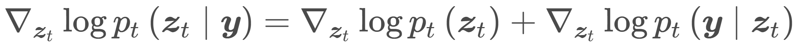
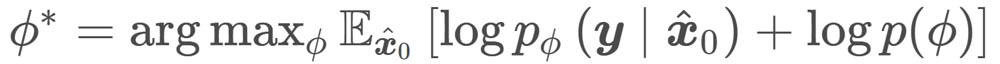

Diffusion models have emerged as powerful tools for solving inverse problems due to their exceptional ability to model complex prior distributions. However, existing methods predominantly assume known forward operators (i.e., non-blind), limiting their applicability in practical settings where acquiring such operators is costly. Additionally, many current approaches rely on pixel-space diffusion models, leaving the potential of more powerful latent diffusion models (LDMs) underexplored. In this paper, we introduce LatentDEM, an innovative technique that addresses more challenging blind inverse problems using latent diffusion priors. At the core of our method is solving blind inverse problems within an iterative Expectation-Maximization (EM) framework: (1) the E-step recovers clean images from corrupted observations using LDM priors and a known forward model, and (2) the M-step estimates the forward operator based on the recovered images. Additionally, we propose two novel optimization techniques tailored for LDM priors and EM frameworks, yielding more accurate and efficient blind inversion results. As a general framework, LatentDEM supports both linear and non-linear inverse problems. Beyond common 2D image restoration tasks, it enables new capabilities in non-linear 3D inverse rendering problems. We validate LatentDEM's performance on representative 2D blind deblurring and 3D sparse-view reconstruction tasks, demonstrating its superior efficacy over prior arts.
E-step, draw samples from LDMs:
M-step, update forward model through MAP:

Our method successfully recovers clean images and accurate blur kernels, consistently outperforming all the baselines, even under challenging cases where the observations are severely degraded.
Our method successfully synthesizes consistent novel view images given two sparse input views. In contrast, Zero123 produces images missing the engine handle that are not consistent with the input views, while LEAP fails to generate photo-realistic images.
We compare our method's performance on 3D mesh reconstruction with One-2-3-45. Both texture and textureless meshes are shown. The baseline sometimes fails to recover fine details as they can only take one input view, while our method shows better mesh reconstruction with two input views.
LatentDEM is readily adaptable to scenarios involving an arbitrary number of views. We evaluate the quality of 3D reconstructions using one, two, and three unposed images.
There's a lot of excellent work that was introduced around the same time as ours.
BlindDPS and FastEM introduce an idea similar to our iterative framework for blind inverse problems.
Zero123 and One-2-3-45 serve as important backbones for our 3D blind inversion tasks, including novel view synthesis and mesh reconstruction.
All the pre-trained latent diffusion models are public, sources come from Stable Diffusion v1.5 , LDMVQ-4, Zero123 and One-2-3-45.
@article{weimin2024latentdem,
author = {Weimin, Bai and Siyi, Chen and Wenzheng, Chen and He, Sun},
title = {Blind Inversion using Latent Diffusion Priors},
journal = {arXiv preprint arXiv:2406.03184},
year = {2024},
}